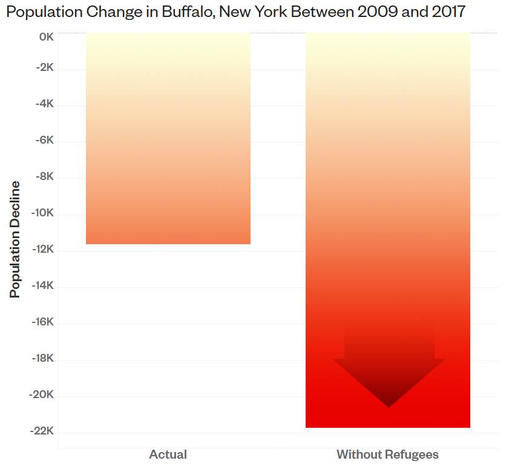
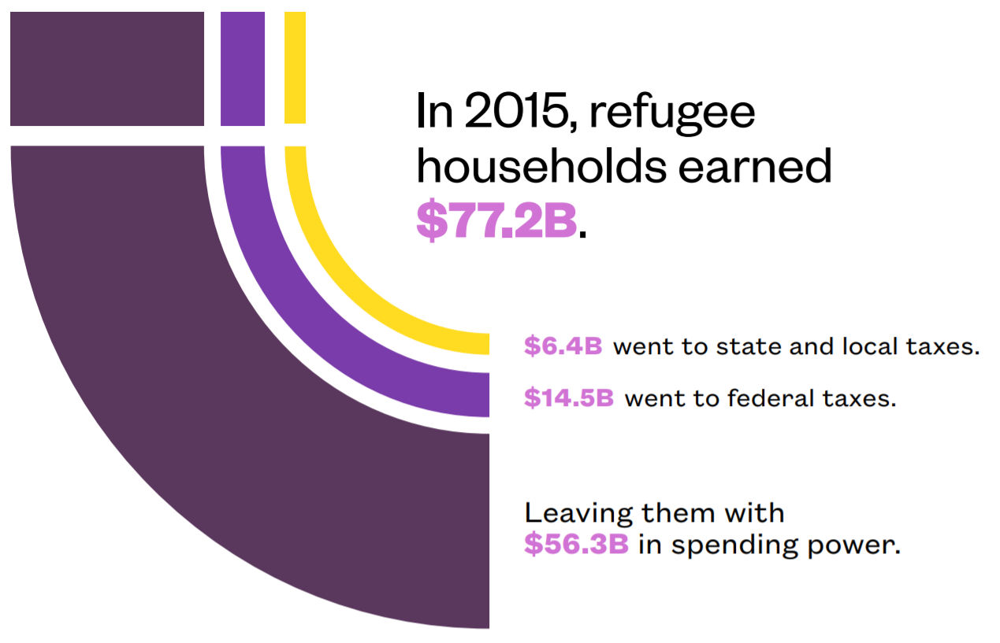
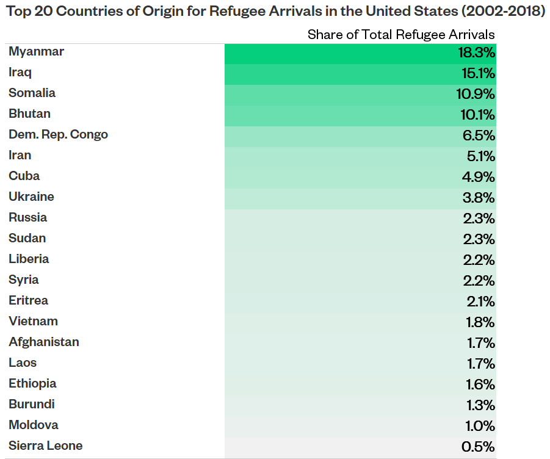
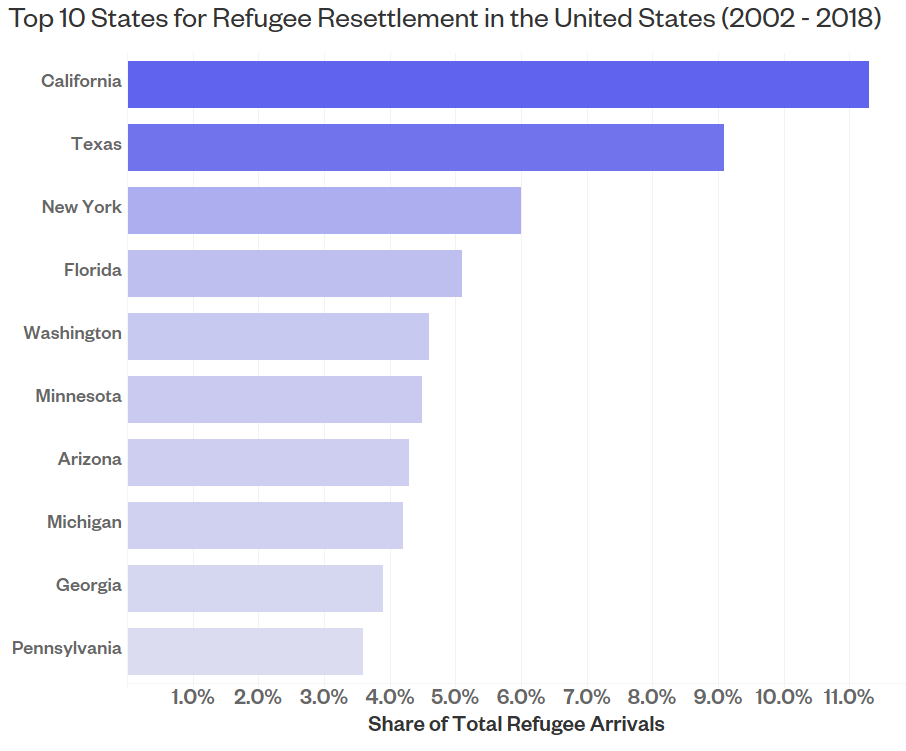

Data Interactives
Immigration in America, explained through data visualization
The number of refugees admitted into the United States has fallen to record lows. This drop affects not only refugees and their families, but also towns and cities across the United States that have embraced and been strengthened by refugees in recent years.
To commemorate World Refugee Day, NAE took a look at almost two decades of refugee resettlement data. In the data interactive below, we show how refugee resettlement has helped boost the economic fortunes and futures of hundreds of cities by tracking every refugee resettled in the United States between 2002 and 2018.
Skip to the Exploratory ToolTotal number of refugee arrivals in the United States
Long the world's leader in resettling refugees escaping conflict and crises,
the United States took in a growing number of refugees starting in 2002, reaching nearly 100,000 in 2016.
However, in 2017 this changed.
Since then, the number of refugees resettled in America has plunged to 23,000 after the Administration set refugee quotas to their lowest levels since the Refugee Act of 1980, according the U.S State Department.
This is especially the case for countries affected by the travel ban,
which heavily restricts people from five predominantly Muslim countries, in addition to
North Korea and Venezuela, from entering the United States.
The number of refugees arriving from these countries––at least 95 percent of them coming
from Somalia, Iran, and Syria––declined sharply, from a high of more than 30,000 in 2016
to slightly more than 200 in 2018.

This steep decline has affected not only refugees and their families
but also U.S. cities that have come to embrace and rely on refugees in recent years.
Buffalo, New York
is one of the top 10 cities in the United States in terms of the number of refugees resettled since 2002. As the city struggles with depopulation, the arrival of refugees helps offset population decline.
Between 2009 and 2017, Buffalo's total population fell by 4.3 percent.
Without the 10,102 refugees resettled in the city during that time period, it could have shrunk almost twice as much—8 percent or 21,731 people.
Total number of refugee arrivals in Salt Lake City
The drop in the number of refugees resettled in the United States
comes at a time when many American cities and companies are facing a severe labor shortage.
In Salt Lake City,
the unemployment rate has been hovering around 3 percent in recent years. With fewer workers looking for jobs, many local restaurants, farms, and construction companies rely on immigrants, including refugees, to keep their businesses running.
However, the number of refugees arriving in Salt Lake City dropped
by 70 percent between 2016 and 2018, making it even more challenging for companies to find enough workers.
Fewer refugees also means fewer entrepreneurs starting new businesses in the United States.
After fleeing Burundi, Nadia Nijimbere and Hamissi Mamba are opening Baobab Fare,
one of the only few East African restaurants in Detroit. The refugee couple hopes to introduce the East African dining experience to the city that has one of the largest African American populations in the country.
They are among the hundreds of thousands of refugees who have come to the United States with an entrepreneurial spirit.
NAE analysis shows that 13 percent of refugees in the United States are entrepreneurs, compared with 9 percent of the U.S.-born population. In 2015, more than 181,000 refugee entrepreneurs lived in the country, generating $4.6 billion in business income.

Despite widespread claims that refugees are a drain on the American society,
research shows that refugees make significant contributions to their receiving communities as earnings, taxpayers, and consumers.
In 2015 alone,
refugee households earned more than $77 billion in income, paid nearly $21 billion in taxes and held more than $56 billion in spending power, supporting countless local businesses from clothing shops to electronics stores to restaurants.

In the face of widespread evidence,
several misperceptions about them persist. One is that refugees cause crime. Past NAE research found that among communities that received the most refugees relative to their size, rather than crime increasing, nine out of ten cities actually became considerably safer.
Another common myth is that all the refugees in the United States are from the Middle East.
In fact, the country that has sent America the most refugees in recent years is Myanmar. Between 2002 and 2018, at least one in six refugees resettled in the United States came from Myanmar, the Southeast Asian country suffering from the world’s longest-running civil war.
For all the refugees resettled in the United States during this time period,
only four Middle Eastern countries show up among the top 20 countries of origin, ranging from Somalia to Bhutan to Ukraine.

Coming from a wide range of countries around the world, where do these refugees live after arriving in the United States?
More than half of all refugees arriving between 2002 and 2018 were resettled in 10 U.S. states. More than one in nine refugees came to live in California, followed by Texas and New York.
Each year, tens of thousands of refugees arrive in the United States and work hard to build new lives in cities across the country. The reduction in refugee quota dims the outlook for many people seeking refuge.
However, it goes beyond that, undermining the future of the towns and cities where refugees have helped offset population decline, fill vital job vacancies, revitalize Main Streets with new businesses, and support local communities as taxpayers and consumers.
Given the contributions of these refugees, NAE built an interactive tool that shows where refugees have been resettled in more than 500 cities. The cities featured all resettled more than 100 refugees between 2002 and 2018.